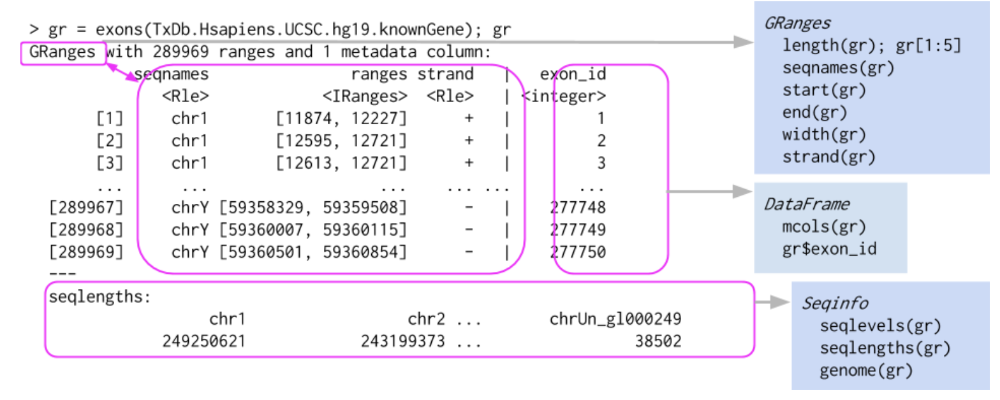
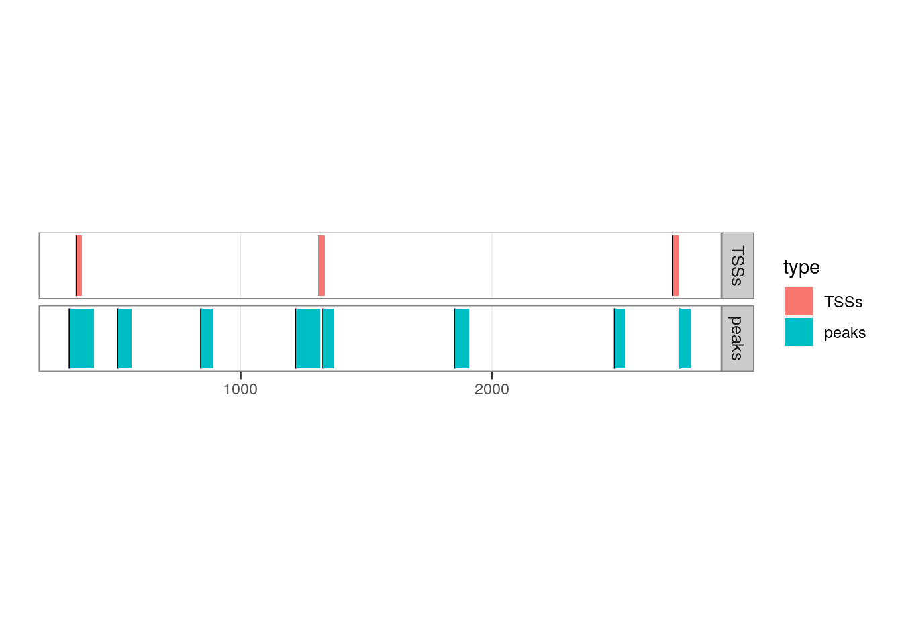
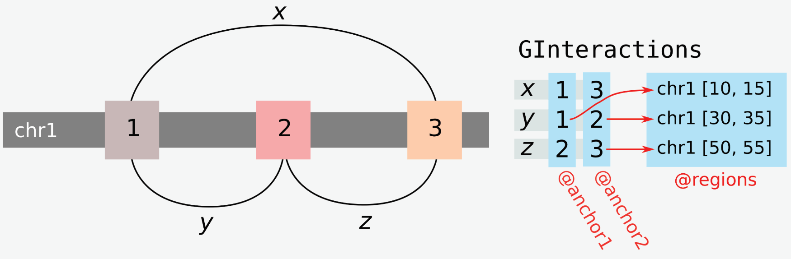
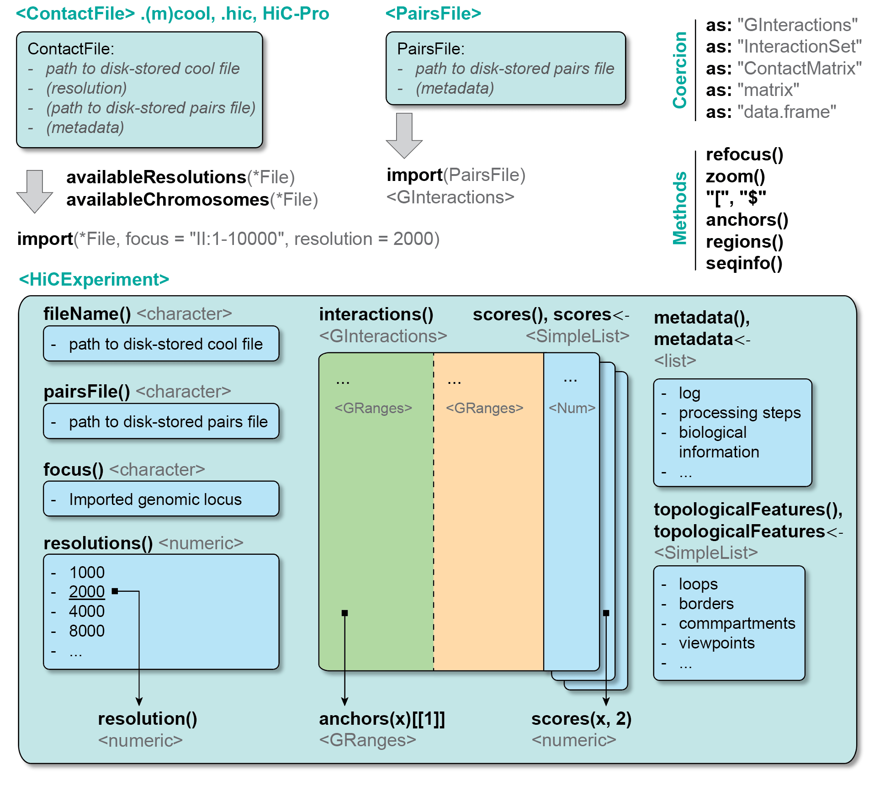

library(GenomicRanges)
gr <- GRanges(c(
"chr2:2004-7853:+",
"chr4:4482-9873:-",
"chr5:1943-4203:+",
"chr5:4103-5004:+"
))
gr
## GRanges object with 4 ranges and 0 metadata columns:
## seqnames ranges strand
## <Rle> <IRanges> <Rle>
## [1] chr2 2004-7853 +
## [2] chr4 4482-9873 -
## [3] chr5 1943-4203 +
## [4] chr5 4103-5004 +
## -------
## seqinfo: 3 sequences from an unspecified genome; no seqlengths2 Hi-C data structures in R
Aims
This chapter introduces the four main classes offered by Bioconductor leveraged to perform Hi-C analysis, describes their structure and how to interact with them:
-
GRanges(jump to the section)
-
GInteractions(jump to the section)
-
ContactFile(jump to the section)
-
HiCExperiment(jump to the section)
TL;DR
Directly jump to the last section of this chapter to get a visual representation of these data structures.
2.1 GRanges class
GRanges is a shorthand for GenomicRanges, a core class in Bioconductor. This class is primarily used to describe genomic ranges of any nature, e.g. sets of promoters, SNPs, chromatin loop anchors, ….
The data structure has been published in the seminal 2015 publication by the Bioconductor team (Huber et al. (2015)).
2.1.1 GRanges fundamentals
The easiest way to generate a GRanges object is to coerce it from a vector of genomic coordinates in the UCSC format (e.g. "chr2:2004-4853"):
A single GRanges object can contain one or several “ranges”, or genomic intervals. To navigate between these ranges, GRanges can be subset using the standard R single bracket notation [:
gr[1]
## GRanges object with 1 range and 0 metadata columns:
## seqnames ranges strand
## <Rle> <IRanges> <Rle>
## [1] chr2 2004-7853 +
## -------
## seqinfo: 3 sequences from an unspecified genome; no seqlengths
gr[1:3]
## GRanges object with 3 ranges and 0 metadata columns:
## seqnames ranges strand
## <Rle> <IRanges> <Rle>
## [1] chr2 2004-7853 +
## [2] chr4 4482-9873 -
## [3] chr5 1943-4203 +
## -------
## seqinfo: 3 sequences from an unspecified genome; no seqlengthsGenomicRanges objects aim to provide a natural description of genomic intervals (ranges) and are incredibly versatile. They extend the data.frame object and have four required pieces of information:
-
seqnames(i.e. chromosome names) (accessible withseqnames()) -
start(accessible withstart()) -
end(accessible withend()) -
strand(accessible withstrand())
seqnames(gr)
## factor-Rle of length 4 with 3 runs
## Lengths: 1 1 2
## Values : chr2 chr4 chr5
## Levels(3): chr2 chr4 chr5
start(gr)
## [1] 2004 4482 1943 4103
end(gr)
## [1] 7853 9873 4203 5004
strand(gr)
## factor-Rle of length 4 with 3 runs
## Lengths: 1 1 2
## Values : + - +
## Levels(3): + - *Here is a graphical representation of a GRanges object, taken from Bioconductor course material:

We will now delve into the detailed structure and operability of GRanges objects.
2.1.2 GRanges metadata
An important aspect of GRanges objects is that each entry (range) can have extra optional metadata. This metadata is stored in a rectangular DataFrame. Each column can contain a different type of information, e.g. a numerical vector, a factor, a list, …
One can directly access this DataFrame using the mcols() function, and individual columns of metadata using the $ notation:
mcols(gr)
## DataFrame with 4 rows and 0 columns
mcols(gr)$GC <- c(0.45, 0.43, 0.44, 0.42)
mcols(gr)$annotation <- factor(c(NA, 'promoter', 'enhancer', 'centromere'))
mcols(gr)$extended.info <- c(
list(c(NA)),
list(c(date = 2023, source = 'manual')),
list(c(date = 2021, source = 'manual')),
list(c(date = 2019, source = 'homology'))
)
mcols(gr)
## DataFrame with 4 rows and 3 columns
## GC annotation extended.info
## <numeric> <factor> <list>
## 1 0.45 NA NA
## 2 0.43 promoter 2023,manual
## 3 0.44 enhancer 2021,manual
## 4 0.42 centromere 2019,homologyWhen metadata columns are defined for a GRanges object, they are pasted next to the minimal 4 required GRanges fields, separated by a | character.
gr
## GRanges object with 4 ranges and 3 metadata columns:
## seqnames ranges strand | GC annotation extended.info
## <Rle> <IRanges> <Rle> | <numeric> <factor> <list>
## [1] chr2 2004-7853 + | 0.45 NA <NA>
## [2] chr4 4482-9873 - | 0.43 promoter 2023,manual
## [3] chr5 1943-4203 + | 0.44 enhancer 2021,manual
## [4] chr5 4103-5004 + | 0.42 centromere 2019,homology
## -------
## seqinfo: 3 sequences from an unspecified genome; no seqlengths
2.1.3 Genomic arithmetics on individual GRanges objects
A GRanges object primarily describes a set of genomic ranges (it is in the name!). Useful genomic-oriented methods have been implemented to investigate individual GRanges object from a genomic perspective.
2.1.3.1 Intra-range methods
Standard genomic arithmetics are possible with GRanges, e.g. shifting ranges, resizing, trimming, … These methods are referred to as “intra-range” methods as they work “one-region-at-a-time”.
Note
- Each range of the input
GRangesobject is modified independently from the other ranges in the following code chunks. - Intra-range operations are endomorphisms: they all take
GRangesinputs and always returnGRangesobjects.
- Shifting each genomic range in a
GRangesobject by a certain number of bases:
gr
## GRanges object with 4 ranges and 3 metadata columns:
## seqnames ranges strand | GC annotation extended.info
## <Rle> <IRanges> <Rle> | <numeric> <factor> <list>
## [1] chr2 2004-7853 + | 0.45 NA <NA>
## [2] chr4 4482-9873 - | 0.43 promoter 2023,manual
## [3] chr5 1943-4203 + | 0.44 enhancer 2021,manual
## [4] chr5 4103-5004 + | 0.42 centromere 2019,homology
## -------
## seqinfo: 3 sequences from an unspecified genome; no seqlengths
# ----- Shift all genomic ranges towards the "right" (downstream in `+` strand), by 1000bp:
shift(gr, 1000)
## GRanges object with 4 ranges and 3 metadata columns:
## seqnames ranges strand | GC annotation extended.info
## <Rle> <IRanges> <Rle> | <numeric> <factor> <list>
## [1] chr2 3004-8853 + | 0.45 NA <NA>
## [2] chr4 5482-10873 - | 0.43 promoter 2023,manual
## [3] chr5 2943-5203 + | 0.44 enhancer 2021,manual
## [4] chr5 5103-6004 + | 0.42 centromere 2019,homology
## -------
## seqinfo: 3 sequences from an unspecified genome; no seqlengths
# ----- Shift all genomic ranges towards the "left" (upstream in `+` strand), by 1000bp:
shift(gr, -1000)
## GRanges object with 4 ranges and 3 metadata columns:
## seqnames ranges strand | GC annotation extended.info
## <Rle> <IRanges> <Rle> | <numeric> <factor> <list>
## [1] chr2 1004-6853 + | 0.45 NA <NA>
## [2] chr4 3482-8873 - | 0.43 promoter 2023,manual
## [3] chr5 943-3203 + | 0.44 enhancer 2021,manual
## [4] chr5 3103-4004 + | 0.42 centromere 2019,homology
## -------
## seqinfo: 3 sequences from an unspecified genome; no seqlengths- Narrowing each genomic range in a
GRangesobject by a certain number of bases:
gr
## GRanges object with 4 ranges and 3 metadata columns:
## seqnames ranges strand | GC annotation extended.info
## <Rle> <IRanges> <Rle> | <numeric> <factor> <list>
## [1] chr2 2004-7853 + | 0.45 NA <NA>
## [2] chr4 4482-9873 - | 0.43 promoter 2023,manual
## [3] chr5 1943-4203 + | 0.44 enhancer 2021,manual
## [4] chr5 4103-5004 + | 0.42 centromere 2019,homology
## -------
## seqinfo: 3 sequences from an unspecified genome; no seqlengths
# ----- Extract 21st-40th subrange for each range in `gr`:
narrow(gr, start = 21, end = 40)
## GRanges object with 4 ranges and 3 metadata columns:
## seqnames ranges strand | GC annotation extended.info
## <Rle> <IRanges> <Rle> | <numeric> <factor> <list>
## [1] chr2 2024-2043 + | 0.45 NA <NA>
## [2] chr4 4502-4521 - | 0.43 promoter 2023,manual
## [3] chr5 1963-1982 + | 0.44 enhancer 2021,manual
## [4] chr5 4123-4142 + | 0.42 centromere 2019,homology
## -------
## seqinfo: 3 sequences from an unspecified genome; no seqlengths
width(narrow(gr, start = 21, end = 40))
## [1] 20 20 20 20- Resizing each genomic range in a
GRangesobject to a certain number of bases:
gr
## GRanges object with 4 ranges and 3 metadata columns:
## seqnames ranges strand | GC annotation extended.info
## <Rle> <IRanges> <Rle> | <numeric> <factor> <list>
## [1] chr2 2004-7853 + | 0.45 NA <NA>
## [2] chr4 4482-9873 - | 0.43 promoter 2023,manual
## [3] chr5 1943-4203 + | 0.44 enhancer 2021,manual
## [4] chr5 4103-5004 + | 0.42 centromere 2019,homology
## -------
## seqinfo: 3 sequences from an unspecified genome; no seqlengths
# ----- Resize `gr` entries to 100, fixed at the start of each range:
resize(gr, 100, fix = "start")
## GRanges object with 4 ranges and 3 metadata columns:
## seqnames ranges strand | GC annotation extended.info
## <Rle> <IRanges> <Rle> | <numeric> <factor> <list>
## [1] chr2 2004-2103 + | 0.45 NA <NA>
## [2] chr4 9774-9873 - | 0.43 promoter 2023,manual
## [3] chr5 1943-2042 + | 0.44 enhancer 2021,manual
## [4] chr5 4103-4202 + | 0.42 centromere 2019,homology
## -------
## seqinfo: 3 sequences from an unspecified genome; no seqlengths
# ----- Resize `gr` entries to 100, fixed at the start of each range, disregarding strand information:
resize(gr, 100, fix = "start", ignore.strand = TRUE)
## GRanges object with 4 ranges and 3 metadata columns:
## seqnames ranges strand | GC annotation extended.info
## <Rle> <IRanges> <Rle> | <numeric> <factor> <list>
## [1] chr2 2004-2103 + | 0.45 NA <NA>
## [2] chr4 4482-4581 - | 0.43 promoter 2023,manual
## [3] chr5 1943-2042 + | 0.44 enhancer 2021,manual
## [4] chr5 4103-4202 + | 0.42 centromere 2019,homology
## -------
## seqinfo: 3 sequences from an unspecified genome; no seqlengths
# ----- Resize `gr` entries to 1 bp, fixed at the center of each range:
resize(gr, 1, fix = "center")
## GRanges object with 4 ranges and 3 metadata columns:
## seqnames ranges strand | GC annotation extended.info
## <Rle> <IRanges> <Rle> | <numeric> <factor> <list>
## [1] chr2 4928 + | 0.45 NA <NA>
## [2] chr4 7177 - | 0.43 promoter 2023,manual
## [3] chr5 3073 + | 0.44 enhancer 2021,manual
## [4] chr5 4553 + | 0.42 centromere 2019,homology
## -------
## seqinfo: 3 sequences from an unspecified genome; no seqlengths- Extracting flanking coordinates for each entry in
gr:
gr
## GRanges object with 4 ranges and 3 metadata columns:
## seqnames ranges strand | GC annotation extended.info
## <Rle> <IRanges> <Rle> | <numeric> <factor> <list>
## [1] chr2 2004-7853 + | 0.45 NA <NA>
## [2] chr4 4482-9873 - | 0.43 promoter 2023,manual
## [3] chr5 1943-4203 + | 0.44 enhancer 2021,manual
## [4] chr5 4103-5004 + | 0.42 centromere 2019,homology
## -------
## seqinfo: 3 sequences from an unspecified genome; no seqlengths
# ----- Extract 100bp UPSTREAM of each genomic range, according to range strandness:
flank(gr, 100, start = TRUE)
## GRanges object with 4 ranges and 3 metadata columns:
## seqnames ranges strand | GC annotation extended.info
## <Rle> <IRanges> <Rle> | <numeric> <factor> <list>
## [1] chr2 1904-2003 + | 0.45 NA <NA>
## [2] chr4 9874-9973 - | 0.43 promoter 2023,manual
## [3] chr5 1843-1942 + | 0.44 enhancer 2021,manual
## [4] chr5 4003-4102 + | 0.42 centromere 2019,homology
## -------
## seqinfo: 3 sequences from an unspecified genome; no seqlengths
# ----- Extract 1bp DOWNSTREAM of each genomic range, according to range strandness:
flank(gr, 1, start = FALSE)
## GRanges object with 4 ranges and 3 metadata columns:
## seqnames ranges strand | GC annotation extended.info
## <Rle> <IRanges> <Rle> | <numeric> <factor> <list>
## [1] chr2 7854 + | 0.45 NA <NA>
## [2] chr4 4481 - | 0.43 promoter 2023,manual
## [3] chr5 4204 + | 0.44 enhancer 2021,manual
## [4] chr5 5005 + | 0.42 centromere 2019,homology
## -------
## seqinfo: 3 sequences from an unspecified genome; no seqlengthsNote how here again, strand information is crucial and correctly leveraged to extract “upstream” or “downstream” flanking regions in agreement with genomic range orientation.
- Several arithmetics operators can also directly work with
GRanges:
gr
## GRanges object with 4 ranges and 3 metadata columns:
## seqnames ranges strand | GC annotation extended.info
## <Rle> <IRanges> <Rle> | <numeric> <factor> <list>
## [1] chr2 2004-7853 + | 0.45 NA <NA>
## [2] chr4 4482-9873 - | 0.43 promoter 2023,manual
## [3] chr5 1943-4203 + | 0.44 enhancer 2021,manual
## [4] chr5 4103-5004 + | 0.42 centromere 2019,homology
## -------
## seqinfo: 3 sequences from an unspecified genome; no seqlengths
gr + 100 # ----- Extend each side of the `GRanges` by a given number of bases
## GRanges object with 4 ranges and 3 metadata columns:
## seqnames ranges strand | GC annotation extended.info
## <Rle> <IRanges> <Rle> | <numeric> <factor> <list>
## [1] chr2 1904-7953 + | 0.45 NA <NA>
## [2] chr4 4382-9973 - | 0.43 promoter 2023,manual
## [3] chr5 1843-4303 + | 0.44 enhancer 2021,manual
## [4] chr5 4003-5104 + | 0.42 centromere 2019,homology
## -------
## seqinfo: 3 sequences from an unspecified genome; no seqlengths
gr - 200 # ----- Shrink each side of the `GRanges` by a given number of bases
## GRanges object with 4 ranges and 3 metadata columns:
## seqnames ranges strand | GC annotation extended.info
## <Rle> <IRanges> <Rle> | <numeric> <factor> <list>
## [1] chr2 2204-7653 + | 0.45 NA <NA>
## [2] chr4 4682-9673 - | 0.43 promoter 2023,manual
## [3] chr5 2143-4003 + | 0.44 enhancer 2021,manual
## [4] chr5 4303-4804 + | 0.42 centromere 2019,homology
## -------
## seqinfo: 3 sequences from an unspecified genome; no seqlengths
gr * 1000 # ----- Zoom in by a given factor (effectively decreasing the `GRanges` width by the same factor)
## GRanges object with 4 ranges and 3 metadata columns:
## seqnames ranges strand | GC annotation extended.info
## <Rle> <IRanges> <Rle> | <numeric> <factor> <list>
## [1] chr2 4926-4930 + | 0.45 NA <NA>
## [2] chr4 7175-7179 - | 0.43 promoter 2023,manual
## [3] chr5 3072-3073 + | 0.44 enhancer 2021,manual
## [4] chr5 4554-4553 + | 0.42 centromere 2019,homology
## -------
## seqinfo: 3 sequences from an unspecified genome; no seqlengths
Going further
To fully grasp how to operate GRanges objects, we highly recommend reading the detailed documentation for this class by typing ?GenomicRanges and ?GenomicRanges::`intra-range-methods`.
2.1.3.2 Inter-range methods
Compared to “intra-range” methods described above, inter-range methods involve comparisons between ranges in a single GRanges object.
Note
Compared to previous section, the result of each function described below depends on the entire set of ranges in the input GRanges object.
- Computing the “inverse” genomic ranges, i.e. ranges in-between the input ranges:
gaps(gr)
## GRanges object with 3 ranges and 0 metadata columns:
## seqnames ranges strand
## <Rle> <IRanges> <Rle>
## [1] chr2 1-2003 +
## [2] chr4 1-4481 -
## [3] chr5 1-1942 +
## -------
## seqinfo: 3 sequences from an unspecified genome; no seqlengths- For each entry in a
GRanges, finding the index of the preceding/following/nearest genomic range:
- Computing a coverage over a genome, optionally indicated a “score” column from metadata:
coverage(gr, weight = 'GC')
## RleList of length 3
## $chr2
## numeric-Rle of length 7853 with 2 runs
## Lengths: 2003 5850
## Values : 0.00 0.45
##
## $chr4
## numeric-Rle of length 9873 with 2 runs
## Lengths: 4481 5392
## Values : 0.00 0.43
##
## $chr5
## numeric-Rle of length 5004 with 4 runs
## Lengths: 1942 2160 101 801
## Values : 0.00 0.44 0.86 0.42
Going further
To fully grasp how to operate GRanges objects, we highly recommend reading the detailed documentation for this class by typing ?GenomicRanges::`inter-range-methods`.
2.1.4 Comparing multiple GRanges objects
Genomic analysis typically requires intersection of two sets of genomic ranges, e.g. to find which ranges from one set overlap with those from another set.
In the next examples, we will use two GRanges:
-
peaksrepresents dummy 8 ChIP-seq peaks
peaks <- GRanges(c(
'chr1:320-418',
'chr1:512-567',
'chr1:843-892',
'chr1:1221-1317',
'chr1:1329-1372',
'chr1:1852-1909',
'chr1:2489-2532',
'chr1:2746-2790'
))
peaks
## GRanges object with 8 ranges and 0 metadata columns:
## seqnames ranges strand
## <Rle> <IRanges> <Rle>
## [1] chr1 320-418 *
## [2] chr1 512-567 *
## [3] chr1 843-892 *
## [4] chr1 1221-1317 *
## [5] chr1 1329-1372 *
## [6] chr1 1852-1909 *
## [7] chr1 2489-2532 *
## [8] chr1 2746-2790 *
## -------
## seqinfo: 1 sequence from an unspecified genome; no seqlengths-
TSSsrepresents dummy 3 gene promoters (± 10bp around the TSS)
genes <- GRanges(c(
'chr1:358-1292:+',
'chr1:1324-2343:+',
'chr1:2732-2751:+'
))
TSSs <- resize(genes, width = 1, fix = 'start') + 10
TSSs
## GRanges object with 3 ranges and 0 metadata columns:
## seqnames ranges strand
## <Rle> <IRanges> <Rle>
## [1] chr1 348-368 +
## [2] chr1 1314-1334 +
## [3] chr1 2722-2742 +
## -------
## seqinfo: 1 sequence from an unspecified genome; no seqlengthsLet’s see how they overlap by plotting them:
library(ggplot2)
peaks$type <- 'peaks'
TSSs$type <- 'TSSs'
ggplot() +
ggbio::geom_rect(c(peaks, TSSs), aes(fill = type), facets = type~.) +
ggbio::theme_alignment() +
coord_fixed(ratio = 300)
## Registered S3 method overwritten by 'GGally':
## method from
## +.gg ggplot2
## Warning: The `facets` argument of `facet_grid()` is deprecated as of ggplot2 2.2.0.
## ℹ Please use the `rows` argument instead.
## ℹ The deprecated feature was likely used in the ggbio package.
## Please report the issue at <https://github.com/lawremi/ggbio/issues>.
## Scale for y is already present.
## Adding another scale for y, which will replace the existing scale.
2.1.4.1 Finding overlaps between two GRanges sets
- Finding overlaps between a query and a subject
In our case, we want to identify which ChIP-seq peaks overlap with a TSS: the query is the set of peaks and the subject is the set of TSSs.
findOverlaps returns a Hits object listing which query ranges overlap with which subject ranges.
ov <- findOverlaps(query = peaks, subject = TSSs)
ov
## Hits object with 3 hits and 0 metadata columns:
## queryHits subjectHits
## <integer> <integer>
## [1] 1 1
## [2] 4 2
## [3] 5 2
## -------
## queryLength: 8 / subjectLength: 3The Hits output clearly describes what overlaps with what:
- The query (peak)
#1overlaps with subject (TSS)#1 - The query (peak)
#5overlaps with subject (TSS)#2
Note
Because no other query index or subject index is listed in the ov output, none of the remaining ranges from query overlap with ranges from subject.
- Subsetting by overlaps between a query and a subject
To directly subset ranges from query overlapping with ranges from a subject (e.g. to only keep peaks overlapping a TSS), we can use the subsetByOverlaps function. The output of subsetByOverlaps is a subset of the original GRanges object provided as a query, with retained ranges being unmodified.
subsetByOverlaps(peaks, TSSs)
## GRanges object with 3 ranges and 1 metadata column:
## seqnames ranges strand | type
## <Rle> <IRanges> <Rle> | <character>
## [1] chr1 320-418 * | peaks
## [2] chr1 1221-1317 * | peaks
## [3] chr1 1329-1372 * | peaks
## -------
## seqinfo: 1 sequence from an unspecified genome; no seqlengths- Counting overlaps between a query and a subject
Finally, the countOverlaps is used to count, for each range in a query, how many ranges in the subject it overlaps with.
countOverlaps(query = peaks, subject = TSSs)
## [1] 1 0 0 1 1 0 0 0
Note
Note that which GRanges goes in query or subject is crucial! Counting for each peak, the number of TSSs it overlaps with is very different from for each TSS, how many peaks it overlaps with.
In our case example, it would also be informative to count how many peaks overlap with each TSS, so we’d need to swap query and subject:
countOverlaps(query = TSSs, subject = peaks)
## [1] 1 2 0We can add these counts to the original query object:
TSSs$n_peaks <- countOverlaps(query = TSSs, subject = peaks)
TSSs
## GRanges object with 3 ranges and 2 metadata columns:
## seqnames ranges strand | type n_peaks
## <Rle> <IRanges> <Rle> | <character> <integer>
## [1] chr1 348-368 + | TSSs 1
## [2] chr1 1314-1334 + | TSSs 2
## [3] chr1 2722-2742 + | TSSs 0
## -------
## seqinfo: 1 sequence from an unspecified genome; no seqlengths-
%over%,%within%,%outside%: handy operators
Handy operators exist that return logical vectors (same length as the query). They essentially are short-hands for specific findOverlaps() cases.
<query> %over% <subject>:
peaks %over% TSSs
## [1] TRUE FALSE FALSE TRUE TRUE FALSE FALSE FALSE
peaks[peaks %over% TSSs] # ----- Equivalent to `subsetByOverlaps(peaks, TSSs)`
## GRanges object with 3 ranges and 1 metadata column:
## seqnames ranges strand | type
## <Rle> <IRanges> <Rle> | <character>
## [1] chr1 320-418 * | peaks
## [2] chr1 1221-1317 * | peaks
## [3] chr1 1329-1372 * | peaks
## -------
## seqinfo: 1 sequence from an unspecified genome; no seqlengths<query> %within% <subject>:
<query> %outside% <subject>:
peaks %outside% TSSs
## [1] FALSE TRUE TRUE FALSE FALSE TRUE TRUE TRUE
Going further
To fully grasp how to find overlaps between GRanges objects, we highly recommend reading the detailed documentation by typing ?IRanges::`findOverlaps-methods`.
2.1.4.2 Find nearest range from a subject for each range in a query
*Overlaps methods are not always enough to match a query to a subject. For instance, some peaks in the query might be very near to some TSSs in the subject, but not quite overlapping.
peaks[8]
## GRanges object with 1 range and 1 metadata column:
## seqnames ranges strand | type
## <Rle> <IRanges> <Rle> | <character>
## [1] chr1 2746-2790 * | peaks
## -------
## seqinfo: 1 sequence from an unspecified genome; no seqlengths
TSSs[3]
## GRanges object with 1 range and 2 metadata columns:
## seqnames ranges strand | type n_peaks
## <Rle> <IRanges> <Rle> | <character> <integer>
## [1] chr1 2722-2742 + | TSSs 0
## -------
## seqinfo: 1 sequence from an unspecified genome; no seqlengthsRather than finding the overlapping range in a subject for each range in a query, we can find the nearest range.
For each range in the query, this returns the index of the range in the subject to which the query is the nearest.
nearest(peaks, TSSs)
## [1] 1 1 2 2 2 2 3 3
TSSs[nearest(peaks, TSSs)]
## GRanges object with 8 ranges and 2 metadata columns:
## seqnames ranges strand | type n_peaks
## <Rle> <IRanges> <Rle> | <character> <integer>
## [1] chr1 348-368 + | TSSs 1
## [2] chr1 348-368 + | TSSs 1
## [3] chr1 1314-1334 + | TSSs 2
## [4] chr1 1314-1334 + | TSSs 2
## [5] chr1 1314-1334 + | TSSs 2
## [6] chr1 1314-1334 + | TSSs 2
## [7] chr1 2722-2742 + | TSSs 0
## [8] chr1 2722-2742 + | TSSs 0
## -------
## seqinfo: 1 sequence from an unspecified genome; no seqlengthsAlternatively, one can simply ask to calculate the distanceToNearest between ranges in a query and ranges in a subject.
distanceToNearest(peaks, TSSs)
## Hits object with 8 hits and 1 metadata column:
## queryHits subjectHits | distance
## <integer> <integer> | <integer>
## [1] 1 1 | 0
## [2] 2 1 | 143
## [3] 3 2 | 421
## [4] 4 2 | 0
## [5] 5 2 | 0
## [6] 6 2 | 517
## [7] 7 3 | 189
## [8] 8 3 | 3
## -------
## queryLength: 8 / subjectLength: 3
peaks$distance_to_nearest_TSS <- mcols(distanceToNearest(peaks, TSSs))$distanceNote how close from a TSS the 8th peak was. It could be worth considering this as an overlap!
2.2 GInteractions class
GRanges describe genomic ranges and hence are of general use to study 1D genome organization. To study chromatin interactions, we need a way to link pairs of GRanges. This is exactly what the GInteractions class does. This data structure is defined in the InteractionSet package and has been published in the 2016 paper by Lun et al. (Lun et al. (2016)).

2.2.1 Building a GInteractions object from scratch
Let’s first define two parallel GRanges objects (i.e. two GRanges of same length). Each GRanges will contain 5 ranges.
Because these two GRanges objects are of same length (5), one can “bind” them together by using the GInteractionsfunction. This effectively associate each entry from one GRanges to the entry aligned in the other GRanges object.
library(InteractionSet)
gi <- GInteractions(gr_first, gr_second)
gi
## GInteractions object with 5 interactions and 0 metadata columns:
## seqnames1 ranges1 seqnames2 ranges2
## <Rle> <IRanges> <Rle> <IRanges>
## [1] chr1 1-100 --- chr1 1-100
## [2] chr1 1001-2000 --- chr1 3001-4000
## [3] chr1 5001-6000 --- chr1 8001-9000
## [4] chr1 8001-9000 --- chr1 7001-8000
## [5] chr1 7001-8000 --- chr2 13000-14000
## -------
## regions: 7 ranges and 0 metadata columns
## seqinfo: 2 sequences from an unspecified genome; no seqlengthsThe way GInteractions objects are printed in an R console mimics that of GRanges, but pairs two “ends” (a.k.a. anchors) of an interaction together, each end being represented as a separate GRanges range.
- Note that it is possible to have interactions joining two identical anchors.
gi[1]
## GInteractions object with 1 interaction and 0 metadata columns:
## seqnames1 ranges1 seqnames2 ranges2
## <Rle> <IRanges> <Rle> <IRanges>
## [1] chr1 1-100 --- chr1 1-100
## -------
## regions: 7 ranges and 0 metadata columns
## seqinfo: 2 sequences from an unspecified genome; no seqlengths- It is also technically possible (though not advised) to have interactions for which the “first” end is located after the “second” end along the chromosome.
gi[4]
## GInteractions object with 1 interaction and 0 metadata columns:
## seqnames1 ranges1 seqnames2 ranges2
## <Rle> <IRanges> <Rle> <IRanges>
## [1] chr1 8001-9000 --- chr1 7001-8000
## -------
## regions: 7 ranges and 0 metadata columns
## seqinfo: 2 sequences from an unspecified genome; no seqlengths- Finally, it is possible to define inter-chromosomal interactions (a.k.a. trans interactions).
gi[5]
## GInteractions object with 1 interaction and 0 metadata columns:
## seqnames1 ranges1 seqnames2 ranges2
## <Rle> <IRanges> <Rle> <IRanges>
## [1] chr1 7001-8000 --- chr2 13000-14000
## -------
## regions: 7 ranges and 0 metadata columns
## seqinfo: 2 sequences from an unspecified genome; no seqlengths
2.2.2 GInteractions specific slots
Compared to GRanges, extra slots are available for GInteractions objects, e.g. anchors and regions.
2.2.2.1 Anchors
“Anchors” of a single genomic interaction refer to the two ends of this interaction. These anchors can be extracted from a GInteractions object using the anchors() function. This outputs a list of two GRanges, the first corresponding to the “left” end of interactions (when printed to the console) and the second corresponding to the “right” end of interactions (when printed to the console).
# ----- This extracts the two sets of anchors ("first" and "second") from a GInteractions object
anchors(gi)
## $first
## GRanges object with 5 ranges and 0 metadata columns:
## seqnames ranges strand
## <Rle> <IRanges> <Rle>
## [1] chr1 1-100 *
## [2] chr1 1001-2000 *
## [3] chr1 5001-6000 *
## [4] chr1 8001-9000 *
## [5] chr1 7001-8000 *
## -------
## seqinfo: 2 sequences from an unspecified genome; no seqlengths
##
## $second
## GRanges object with 5 ranges and 0 metadata columns:
## seqnames ranges strand
## <Rle> <IRanges> <Rle>
## [1] chr1 1-100 *
## [2] chr1 3001-4000 *
## [3] chr1 8001-9000 *
## [4] chr1 7001-8000 *
## [5] chr2 13000-14000 *
## -------
## seqinfo: 2 sequences from an unspecified genome; no seqlengths
# ----- We can query for the "first" or "second" set of anchors directly
anchors(gi, "first")
## GRanges object with 5 ranges and 0 metadata columns:
## seqnames ranges strand
## <Rle> <IRanges> <Rle>
## [1] chr1 1-100 *
## [2] chr1 1001-2000 *
## [3] chr1 5001-6000 *
## [4] chr1 8001-9000 *
## [5] chr1 7001-8000 *
## -------
## seqinfo: 2 sequences from an unspecified genome; no seqlengths
anchors(gi, "second")
## GRanges object with 5 ranges and 0 metadata columns:
## seqnames ranges strand
## <Rle> <IRanges> <Rle>
## [1] chr1 1-100 *
## [2] chr1 3001-4000 *
## [3] chr1 8001-9000 *
## [4] chr1 7001-8000 *
## [5] chr2 13000-14000 *
## -------
## seqinfo: 2 sequences from an unspecified genome; no seqlengths2.2.2.2 Regions
“Regions” of a set of interactions refer to the universe of unique anchors represented in a set of interactions. Therefore, the length of the regions can only be equal to or strictly lower than twice the length of anchors.
The regions function returns the regions associated with a GInteractions object, stored as a GRanges object.
regions(gi)
## GRanges object with 7 ranges and 0 metadata columns:
## seqnames ranges strand
## <Rle> <IRanges> <Rle>
## [1] chr1 1-100 *
## [2] chr1 1001-2000 *
## [3] chr1 3001-4000 *
## [4] chr1 5001-6000 *
## [5] chr1 7001-8000 *
## [6] chr1 8001-9000 *
## [7] chr2 13000-14000 *
## -------
## seqinfo: 2 sequences from an unspecified genome; no seqlengths
length(regions(gi))
## [1] 7
length(anchors(gi, "first"))
## [1] 5
2.2.3 GInteractions methods
GInteractions behave as an extension of GRanges. For this reason, many methods that work with GRanges will work seamlessly with GInteractions.
2.2.3.1 Metadata
One can add metadata columns directly to a GInteractions object.
mcols(gi)
## DataFrame with 5 rows and 0 columns
mcols(gi) <- data.frame(
idx = seq(1, length(gi)),
type = c("cis", "cis", "cis", "trans", "cis")
)
gi
## GInteractions object with 5 interactions and 2 metadata columns:
## seqnames1 ranges1 seqnames2 ranges2 | idx type
## <Rle> <IRanges> <Rle> <IRanges> | <integer> <character>
## [1] chr1 1-100 --- chr1 1-100 | 1 cis
## [2] chr1 1001-2000 --- chr1 3001-4000 | 2 cis
## [3] chr1 5001-6000 --- chr1 8001-9000 | 3 cis
## [4] chr1 8001-9000 --- chr1 7001-8000 | 4 trans
## [5] chr1 7001-8000 --- chr2 13000-14000 | 5 cis
## -------
## regions: 7 ranges and 0 metadata columns
## seqinfo: 2 sequences from an unspecified genome; no seqlengths
gi$type
## [1] "cis" "cis" "cis" "trans" "cis"Importantly, metadata columns can also be directly added to regions of a GInteractions object, since these regions are a GRanges object themselves!
regions(gi)
## GRanges object with 7 ranges and 0 metadata columns:
## seqnames ranges strand
## <Rle> <IRanges> <Rle>
## [1] chr1 1-100 *
## [2] chr1 1001-2000 *
## [3] chr1 3001-4000 *
## [4] chr1 5001-6000 *
## [5] chr1 7001-8000 *
## [6] chr1 8001-9000 *
## [7] chr2 13000-14000 *
## -------
## seqinfo: 2 sequences from an unspecified genome; no seqlengths
regions(gi)$binID <- seq_along(regions(gi))
regions(gi)$type <- c("P", "P", "P", "E", "E", "P", "P")
regions(gi)
## GRanges object with 7 ranges and 2 metadata columns:
## seqnames ranges strand | binID type
## <Rle> <IRanges> <Rle> | <integer> <character>
## [1] chr1 1-100 * | 1 P
## [2] chr1 1001-2000 * | 2 P
## [3] chr1 3001-4000 * | 3 P
## [4] chr1 5001-6000 * | 4 E
## [5] chr1 7001-8000 * | 5 E
## [6] chr1 8001-9000 * | 6 P
## [7] chr2 13000-14000 * | 7 P
## -------
## seqinfo: 2 sequences from an unspecified genome; no seqlengths
2.2.3.2 Sorting GInteractions
The sort function works seamlessly with GInteractions objects. It sorts the interactions using a similar approach to that performed by pairtools sort ... for disk-stored .pairs files, sorting on the “first” anchor first, then for interactions with the same “first” anchors, sorting on the “second” anchor.
gi
## GInteractions object with 5 interactions and 2 metadata columns:
## seqnames1 ranges1 seqnames2 ranges2 | idx type
## <Rle> <IRanges> <Rle> <IRanges> | <integer> <character>
## [1] chr1 1-100 --- chr1 1-100 | 1 cis
## [2] chr1 1001-2000 --- chr1 3001-4000 | 2 cis
## [3] chr1 5001-6000 --- chr1 8001-9000 | 3 cis
## [4] chr1 8001-9000 --- chr1 7001-8000 | 4 trans
## [5] chr1 7001-8000 --- chr2 13000-14000 | 5 cis
## -------
## regions: 7 ranges and 2 metadata columns
## seqinfo: 2 sequences from an unspecified genome; no seqlengths
sort(gi)
## GInteractions object with 5 interactions and 2 metadata columns:
## seqnames1 ranges1 seqnames2 ranges2 | idx type
## <Rle> <IRanges> <Rle> <IRanges> | <integer> <character>
## [1] chr1 1-100 --- chr1 1-100 | 1 cis
## [2] chr1 1001-2000 --- chr1 3001-4000 | 2 cis
## [3] chr1 5001-6000 --- chr1 8001-9000 | 3 cis
## [4] chr1 7001-8000 --- chr2 13000-14000 | 5 cis
## [5] chr1 8001-9000 --- chr1 7001-8000 | 4 trans
## -------
## regions: 7 ranges and 2 metadata columns
## seqinfo: 2 sequences from an unspecified genome; no seqlengths
2.2.3.3 Swapping GInteractions anchors
For an individual interaction contained in a GInteractions object, the “first” and “second” anchors themselves can be sorted as well. This is called “pairs swapping”, and it is performed similarly to pairtools flip ... for disk-stored .pairs files. This ensures that interactions, when represented as a contact matrix, generate an upper-triangular matrix.
gi
## GInteractions object with 5 interactions and 2 metadata columns:
## seqnames1 ranges1 seqnames2 ranges2 | idx type
## <Rle> <IRanges> <Rle> <IRanges> | <integer> <character>
## [1] chr1 1-100 --- chr1 1-100 | 1 cis
## [2] chr1 1001-2000 --- chr1 3001-4000 | 2 cis
## [3] chr1 5001-6000 --- chr1 8001-9000 | 3 cis
## [4] chr1 8001-9000 --- chr1 7001-8000 | 4 trans
## [5] chr1 7001-8000 --- chr2 13000-14000 | 5 cis
## -------
## regions: 7 ranges and 2 metadata columns
## seqinfo: 2 sequences from an unspecified genome; no seqlengths
swapAnchors(gi)
## GInteractions object with 5 interactions and 2 metadata columns:
## seqnames1 ranges1 seqnames2 ranges2 | idx type
## <Rle> <IRanges> <Rle> <IRanges> | <integer> <character>
## [1] chr1 1-100 --- chr1 1-100 | 1 cis
## [2] chr1 1001-2000 --- chr1 3001-4000 | 2 cis
## [3] chr1 5001-6000 --- chr1 8001-9000 | 3 cis
## [4] chr1 7001-8000 --- chr1 8001-9000 | 4 trans
## [5] chr1 7001-8000 --- chr2 13000-14000 | 5 cis
## -------
## regions: 7 ranges and 2 metadata columns
## seqinfo: 2 sequences from an unspecified genome; no seqlengths
Note
“Sorting” and “swapping” a GInteractions object are two entirely different actions:
- “sorting” reorganizes all rows (interactions);
- “swapping” anchors reorganizes “first” and “second” anchors for each interaction independently.
2.2.3.4 GInteractions distance method
“Distance”, when applied to genomic interactions, typically refers to the genomic distance between the two anchors of a single interaction. For GInteractions, this is computed using the pairdist function.
gi
## GInteractions object with 5 interactions and 2 metadata columns:
## seqnames1 ranges1 seqnames2 ranges2 | idx type
## <Rle> <IRanges> <Rle> <IRanges> | <integer> <character>
## [1] chr1 1-100 --- chr1 1-100 | 1 cis
## [2] chr1 1001-2000 --- chr1 3001-4000 | 2 cis
## [3] chr1 5001-6000 --- chr1 8001-9000 | 3 cis
## [4] chr1 8001-9000 --- chr1 7001-8000 | 4 trans
## [5] chr1 7001-8000 --- chr2 13000-14000 | 5 cis
## -------
## regions: 7 ranges and 2 metadata columns
## seqinfo: 2 sequences from an unspecified genome; no seqlengths
pairdist(gi)
## [1] 0 2000 3000 1000 NANote that for “trans” inter-chromosomal interactions, i.e. interactions with anchors on different chromosomes, the notion of genomic distance is meaningless and for this reason, pairdist returns a NA value.
The type argument of the pairdist() function can be tweaked to specify which type of “distance” should be computed:
-
mid: The distance between the midpoints of the two regions (rounded down to the nearest integer) is returned (Default). -
gap: The length of the gap between the closest points of the two regions is computed - negative lengths are returned for overlapping regions, indicating the length of the overlap. -
span: The distance between the furthermost points of the two regions is computed. -
diag: The difference between the anchor indices is returned. This corresponds to a diagonal on the interaction space when bins are used in the ‘regions’ slot of ‘x’.
2.2.3.5 GInteractions overlap methods
“Overlaps” for genomic interactions could be computed in different contexts:
- Case 1: Overlap between any of the two anchors of an interaction with a genomic range
- Case 2: Overlap between anchors of an interaction with anchors of another interaction
- Case 3: Spanning of the interaction “across” a genomic range
Case 1: Overlap between any of the two anchors of an interaction with a genomic range
This is the default behavior of findOverlaps when providing a GInteractions object as query and a GRanges as a subject.
gr <- GRanges(c("chr1:7501-7600", "chr1:8501-8600"))
findOverlaps(query = gi, subject = gr)
## Hits object with 4 hits and 0 metadata columns:
## queryHits subjectHits
## <integer> <integer>
## [1] 3 2
## [2] 4 1
## [3] 4 2
## [4] 5 1
## -------
## queryLength: 5 / subjectLength: 2
countOverlaps(gi, gr)
## [1] 0 0 1 2 1
subsetByOverlaps(gi, gr)
## GInteractions object with 3 interactions and 2 metadata columns:
## seqnames1 ranges1 seqnames2 ranges2 | idx type
## <Rle> <IRanges> <Rle> <IRanges> | <integer> <character>
## [1] chr1 5001-6000 --- chr1 8001-9000 | 3 cis
## [2] chr1 8001-9000 --- chr1 7001-8000 | 4 trans
## [3] chr1 7001-8000 --- chr2 13000-14000 | 5 cis
## -------
## regions: 7 ranges and 2 metadata columns
## seqinfo: 2 sequences from an unspecified genome; no seqlengthsHere again, the order matters!
countOverlaps(gr, gi)
## [1] 2 2And again, the %over% operator can be used here:
gi %over% gr
## [1] FALSE FALSE TRUE TRUE TRUE
gi[gi %over% gr] # ----- Equivalent to `subsetByOverlaps(gi, gr)`
## GInteractions object with 3 interactions and 2 metadata columns:
## seqnames1 ranges1 seqnames2 ranges2 | idx type
## <Rle> <IRanges> <Rle> <IRanges> | <integer> <character>
## [1] chr1 5001-6000 --- chr1 8001-9000 | 3 cis
## [2] chr1 8001-9000 --- chr1 7001-8000 | 4 trans
## [3] chr1 7001-8000 --- chr2 13000-14000 | 5 cis
## -------
## regions: 7 ranges and 2 metadata columns
## seqinfo: 2 sequences from an unspecified genome; no seqlengthsCase 2: Overlap between anchors of an interaction with anchors of another interaction
This slightly different scenario involves overlapping two sets of interactions, to see whether any interaction in Set-1 has its two anchors overlapping anchors from an interaction in Set-2.
gi2 <- GInteractions(
GRanges("chr1:1081-1090"),
GRanges("chr1:3401-3501")
)
gi %over% gi2
## [1] FALSE TRUE FALSE FALSE FALSENote that both anchors of an interaction from a query have to overlap to a pair of anchors of a single interaction from a subject with this method!
gi3 <- GInteractions(
GRanges("chr1:1-1000"),
GRanges("chr1:3401-3501")
)
gi %over% gi3
## [1] FALSE FALSE FALSE FALSE FALSECase 3 : Spanning of the interaction “accross” a genomic range
This requires a bit of wrangling, to mimic an overlap between two GRanges objects:
gi <- swapAnchors(gi) # ----- Make sure anchors are correctly sorted
gi <- sort(gi) # ----- Make sure interactions are correctly sorted
gi <- gi[!is.na(pairdist(gi))] # ----- Remove inter-chromosomal interactions
spanning_gi <- GRanges(
seqnames = seqnames(anchors(gi)[[1]]),
ranges = IRanges(
start(anchors(gi)[[1]]),
end(anchors(gi)[[2]])
)
)
spanning_gi
## GRanges object with 4 ranges and 0 metadata columns:
## seqnames ranges strand
## <Rle> <IRanges> <Rle>
## [1] chr1 1-100 *
## [2] chr1 1001-4000 *
## [3] chr1 5001-9000 *
## [4] chr1 7001-9000 *
## -------
## seqinfo: 2 sequences from an unspecified genome; no seqlengths
spanning_gi %over% gr
## [1] FALSE FALSE TRUE TRUE
Going further
A detailed manual of overlap methods available for GInteractions object can be read by typing ?`Interaction-overlaps` in R.
2.3 ContactFile class
Hi-C contacts can be stored in four different formats (see previous chapter):
- As a
.(m)coolmatrix (multi-scores, multi-resolution, indexed) - As a
.hicmatrix (multi-scores, multi-resolution, indexed) - As a HiC-pro derived matrix (single-score, single-resolution, non-indexed)
- Unbinned, Hi-C contacts can be stored in
.pairsfiles
2.3.1 Accessing example Hi-C files
Example contact files can be downloaded using HiContactsData function.
library(HiContactsData)
coolf <- HiContactsData('yeast_wt', 'mcool')This fetches files from the cloud, download them locally and returns the path of the local file.
coolf
## EH7702
## "/root/.cache/R/ExperimentHub/16dd6c5d5f_7752"Similarly, example files are available for other file formats:
hicf <- HiContactsData('yeast_wt', 'hic')
hicpromatrixf <- HiContactsData('yeast_wt', 'hicpro_matrix')
hicproregionsf <- HiContactsData('yeast_wt', 'hicpro_bed')
pairsf <- HiContactsData('yeast_wt', 'pairs.gz')We can even check the content of some of these files to make sure they are actually what they are:
# ---- HiC-Pro generates a tab-separated `regions.bed` file
readLines(hicproregionsf, 25)
## [1] "I\t0\t1000" "I\t1000\t2000" "I\t2000\t3000" "I\t3000\t4000"
## [5] "I\t4000\t5000" "I\t5000\t6000" "I\t6000\t7000" "I\t7000\t8000"
## [9] "I\t8000\t9000" "I\t9000\t10000" "I\t10000\t11000" "I\t11000\t12000"
## [13] "I\t12000\t13000" "I\t13000\t14000" "I\t14000\t15000" "I\t15000\t16000"
## [17] "I\t16000\t17000" "I\t17000\t18000" "I\t18000\t19000" "I\t19000\t20000"
## [21] "I\t20000\t21000" "I\t21000\t22000" "I\t22000\t23000" "I\t23000\t24000"
## [25] "I\t24000\t25000"
# ---- Pairs are also tab-separated
readLines(pairsf, 25)
## [1] "## pairs format v1.0"
## [2] "#sorted: chr1-pos1-chr2-pos2"
## [3] "#columns: readID chr1 pos1 chr2 pos2 strand1 strand2 frag1 frag2"
## [4] "#chromsize: I 230218"
## [5] "#chromsize: II 813184"
## [6] "#chromsize: III 316620"
## [7] "#chromsize: IV 1531933"
## [8] "#chromsize: V 576874"
## [9] "#chromsize: VI 270161"
## [10] "#chromsize: VII 1090940"
## [11] "#chromsize: VIII 562643"
## [12] "#chromsize: IX 439888"
## [13] "#chromsize: X 745751"
## [14] "#chromsize: XI 666816"
## [15] "#chromsize: XII 1078177"
## [16] "#chromsize: XIII 924431"
## [17] "#chromsize: XIV 784333"
## [18] "#chromsize: XV 1091291"
## [19] "#chromsize: XVI 948066"
## [20] "#chromsize: Mito 85779"
## [21] "NS500150:527:HHGYNBGXF:3:21611:19085:3986\tII\t105\tII\t48548\t+\t-\t1358\t1681"
## [22] "NS500150:527:HHGYNBGXF:4:13604:19734:2406\tII\t113\tII\t45003\t-\t+\t1358\t1658"
## [23] "NS500150:527:HHGYNBGXF:2:11108:25178:11036\tII\t119\tII\t687251\t-\t+\t1358\t5550"
## [24] "NS500150:527:HHGYNBGXF:1:22301:8468:1586\tII\t160\tII\t26124\t+\t-\t1358\t1510"
## [25] "NS500150:527:HHGYNBGXF:4:23606:24037:2076\tII\t169\tII\t39052\t+\t+\t1358\t1613"
2.3.2 ContactFile fundamentals
A ContactFile object establishes a connection with a disk-stored Hi-C file (e.g. a .cool file, or a .pairs file, …). ContactFile classes are defined in the HiCExperiment package.
ContactFiles come in four different flavors:
-
CoolFile: connection to a.(m)coolfile -
HicFile: connection to a.hicfile -
HicproFile: connection to output files generated by HiC-Pro -
PairsFile: connection to a.pairsfile
To create each flavor of ContactFile, one can use the corresponding function:
library(HiCExperiment)
# ----- This creates a connection to a `.(m)cool` file (path stored in `coolf`)
CoolFile(coolf)
## CoolFile object
## .mcool file: /root/.cache/R/ExperimentHub/16dd6c5d5f_7752
## resolution: 1000
## pairs file:
## metadata(0):
# ----- This creates a connection to a `.hic` file (path stored in `hicf`)
HicFile(hicf)
## HicFile object
## .hic file: /root/.cache/R/ExperimentHub/16d160e6aeb_7836
## resolution: 1000
## pairs file:
## metadata(0):
# ----- This creates a connection to output files from HiC-Pro
HicproFile(hicpromatrixf, hicproregionsf)
## HicproFile object
## HiC-Pro files:
## $ matrix: /root/.cache/R/ExperimentHub/16dfa774ff_7837
## $ regions: /root/.cache/R/ExperimentHub/16d75113d35_7838
## resolution: 1000
## pairs file:
## metadata(0):
# ----- This creates a connection to a pairs file
PairsFile(pairsf)
## PairsFile object
## resource: /root/.cache/R/ExperimentHub/16d2ae89407_7753
2.3.3 ContactFile slots
Several “slots” (i.e. pieces of information) are attached to a ContactFile object:
- The path to the disk-stored contact matrix;
- The active resolution (by default, the finest resolution available in a multi-resolution contact matrix);
- Optionally, the path to a matching
pairsfile (see below); - Some metadata.
Slots of a CoolFile object can be accessed as follow:
cf <- CoolFile(coolf)
cf
## CoolFile object
## .mcool file: /root/.cache/R/ExperimentHub/16dd6c5d5f_7752
## resolution: 1000
## pairs file:
## metadata(0):
resolution(cf)
## [1] 1000
pairsFile(cf)
## NULL
metadata(cf)
## list()
Important!
ContactFile objects are only connections to a disk-stored HiC file. Although metadata is available, they do not contain actual data!
2.3.4 ContactFile methods
Two useful methods are available for ContactFiles:
-
availableResolutionschecks which resolutions are available in aContactFile.
availableResolutions(cf)
## resolutions(5): 1000 2000 4000 8000 16000
## -
availableChromosomeschecks which chromosomes are available in aContactFile, along with their length.
availableChromosomes(cf)
## Seqinfo object with 16 sequences from an unspecified genome:
## seqnames seqlengths isCircular genome
## I 230218 <NA> <NA>
## II 813184 <NA> <NA>
## III 316620 <NA> <NA>
## IV 1531933 <NA> <NA>
## V 576874 <NA> <NA>
## ... ... ... ...
## XII 1078177 <NA> <NA>
## XIII 924431 <NA> <NA>
## XIV 784333 <NA> <NA>
## XV 1091291 <NA> <NA>
## XVI 948066 <NA> <NA>
2.4 HiCExperiment class
Based on the previous sections, we have different Bioconductor classes relevant for Hi-C:
-
GInteractionswhich can be used to represent genomic interactions in R -
ContactFiles which can be used to establish a connection with disk-stored Hi-C files
HiCExperiment objects are created when parsing a ContactFile in R. The HiCExperiment class reads a ContactFile in memory and store genomic interactions as GInteractions. The HiCExperiment class is, quite obviously, defined in the HiCExperiment package.
2.4.1 Creating a HiCExperiment object
2.4.1.1 Importing a ContactFile
In practice, to create a HiCExperiment object from a ContactFile, one can use the import method.
Caution
- Creating a
HiCExperimentobject means importing data from a Hi-C matrix (e.g. from aContactFile) in memory in R.
- Creating a
HiCExperimentobject from large disk-stored contact matrices can potentially take a long time.
cf <- CoolFile(coolf)
hic <- import(cf)
hic
## `HiCExperiment` object with 8,757,906 contacts over 12,079 regions
## -------
## fileName: "/root/.cache/R/ExperimentHub/16dd6c5d5f_7752"
## focus: "whole genome"
## resolutions(5): 1000 2000 4000 8000 16000
## active resolution: 1000
## interactions: 2945692
## scores(2): count balanced
## topologicalFeatures: compartments(0) borders(0) loops(0) viewpoints(0)
## pairsFile: N/A
## metadata(0):Printing a HiCExperiment to the console will not reveal the actual data stored in the object (it would most likely crash your R session!). Instead, it gives a summary of the data stored in the object:
- The
fileName, i.e. the path to the disk-stored data file - The
focus, i.e. the genomic location for which data has been imported (in the example above,"whole genome"implies that all the data has been imported in R) -
resolutionsavailable in the disk-stored data file (this will be identical toavailableResolutions(cf)) -
active resolutionindicates at which resolution the data is currently imported -
interactionsrefers to the actualGInteractionsimported in R and “hidden” (for now!) in theHiCExperimentobject -
scoresrefer to different interaction frequency estimates. These can be rawcounts,balanced(if the contact matrix has been previously normalized), or whatever score the end-user want to attribute to each interaction (e.g. ratio of counts between two Hi-C maps, …) -
topologicalFeaturesis alistofGRangesorGInteractionsobjects to describe important topological features. -
pairsFileis a pointer to an optional disk-stored.pairsfile from which the contact matrix has been created. This is often useful to estimate some Hi-C metrics. -
metadatais alistto further describe the experiment.
These pieces of information are called slots. They can be directly accessed using getter functions, bearing the same name than the slot.
fileName(hic)
## [1] "/root/.cache/R/ExperimentHub/16dd6c5d5f_7752"
focus(hic)
## NULL
resolutions(hic)
## [1] 1000 2000 4000 8000 16000
resolution(hic)
## [1] 1000
interactions(hic)
## GInteractions object with 2945692 interactions and 4 metadata columns:
## seqnames1 ranges1 seqnames2 ranges2 | bin_id1
## <Rle> <IRanges> <Rle> <IRanges> | <numeric>
## [1] I 1-1000 --- I 1-1000 | 0
## [2] I 1-1000 --- I 1001-2000 | 0
## [3] I 1-1000 --- I 2001-3000 | 0
## [4] I 1-1000 --- I 3001-4000 | 0
## [5] I 1-1000 --- I 4001-5000 | 0
## ... ... ... ... ... ... . ...
## [2945688] XVI 940001-941000 --- XVI 942001-943000 | 12070
## [2945689] XVI 940001-941000 --- XVI 943001-944000 | 12070
## [2945690] XVI 941001-942000 --- XVI 941001-942000 | 12071
## [2945691] XVI 941001-942000 --- XVI 942001-943000 | 12071
## [2945692] XVI 941001-942000 --- XVI 943001-944000 | 12071
## bin_id2 count balanced
## <numeric> <numeric> <numeric>
## [1] 0 15 0.0663491
## [2] 1 21 0.1273505
## [3] 2 21 0.0738691
## [4] 3 38 0.0827051
## [5] 4 17 0.0591984
## ... ... ... ...
## [2945688] 12072 11 0.0575550
## [2945689] 12073 1 NaN
## [2945690] 12071 74 0.0504615
## [2945691] 12072 39 0.1624599
## [2945692] 12073 1 NaN
## -------
## regions: 12079 ranges and 4 metadata columns
## seqinfo: 16 sequences from an unspecified genome
scores(hic)
## List of length 2
## names(2): count balanced
topologicalFeatures(hic)
## List of length 4
## names(4): compartments borders loops viewpoints
pairsFile(hic)
## NULL
metadata(hic)
## list()import also works for other types of ContactFile (HicFile, HicproFile, PairsFile), e.g.
- For
HicFileandHicproFile,importseamlessly returns aHiCExperimentas well:
hf <- HicFile(hicf)
hic <- import(hf)
hic
## `HiCExperiment` object with 13,681,280 contacts over 12,165 regions
## -------
## fileName: "/root/.cache/R/ExperimentHub/16d160e6aeb_7836"
## focus: "whole genome"
## resolutions(5): 1000 2000 4000 8000 16000
## active resolution: 1000
## interactions: 2965693
## scores(2): count balanced
## topologicalFeatures: compartments(0) borders(0) loops(0) viewpoints(0)
## pairsFile: N/A
## metadata(0):- For
PairsFile, the returned object is a representation of Hi-C “pairs” in R, i.e.GInteractions
pf <- PairsFile(pairsf)
pairs <- import(pf)
pairs
## GInteractions object with 471364 interactions and 3 metadata columns:
## seqnames1 ranges1 seqnames2 ranges2 | frag1 frag2
## <Rle> <IRanges> <Rle> <IRanges> | <numeric> <numeric>
## [1] II 105 --- II 48548 | 1358 1681
## [2] II 113 --- II 45003 | 1358 1658
## [3] II 119 --- II 687251 | 1358 5550
## [4] II 160 --- II 26124 | 1358 1510
## [5] II 169 --- II 39052 | 1358 1613
## ... ... ... ... ... ... . ... ...
## [471360] II 808605 --- II 809683 | 6316 6320
## [471361] II 808609 --- II 809917 | 6316 6324
## [471362] II 808617 --- II 809506 | 6316 6319
## [471363] II 809447 --- II 809685 | 6319 6321
## [471364] II 809472 --- II 809675 | 6319 6320
## distance
## <integer>
## [1] 48443
## [2] 44890
## [3] 687132
## [4] 25964
## [5] 38883
## ... ...
## [471360] 1078
## [471361] 1308
## [471362] 889
## [471363] 238
## [471364] 203
## -------
## regions: 549331 ranges and 0 metadata columns
## seqinfo: 1 sequence from an unspecified genome; no seqlengths
2.4.1.2 Customizing the import
To reduce the import to only parse the data that is relevant to the study, two arguments can be passed to import, along with a ContactFile.
Key
import arguments:
-
focus: This can be used to only parse data for a specific genomic location. -
resolution: This can be used to choose which resolution to parse the contact matrix at (this is ignored if theContactFileis not multi-resolution, e.g..coolor HiC-Pro generated matrices)
- Import interactions within a single chromosome:
hic <- import(cf, focus = 'II', resolution = 2000)
regions(hic) # ---- `regions()` work on `HiCExperiment` the same way than on `GInteractions`
## GRanges object with 407 ranges and 4 metadata columns:
## seqnames ranges strand | bin_id weight chr
## <Rle> <IRanges> <Rle> | <numeric> <numeric> <Rle>
## II_1_2000 II 1-2000 * | 116 NaN II
## II_2001_4000 II 2001-4000 * | 117 NaN II
## II_4001_6000 II 4001-6000 * | 118 NaN II
## II_6001_8000 II 6001-8000 * | 119 NaN II
## II_8001_10000 II 8001-10000 * | 120 0.0461112 II
## ... ... ... ... . ... ... ...
## II_804001_806000 II 804001-806000 * | 518 0.0493107 II
## II_806001_808000 II 806001-808000 * | 519 0.0611355 II
## II_808001_810000 II 808001-810000 * | 520 NaN II
## II_810001_812000 II 810001-812000 * | 521 NaN II
## II_812001_813184 II 812001-813184 * | 522 NaN II
## center
## <integer>
## II_1_2000 1000
## II_2001_4000 3000
## II_4001_6000 5000
## II_6001_8000 7000
## II_8001_10000 9000
## ... ...
## II_804001_806000 805000
## II_806001_808000 807000
## II_808001_810000 809000
## II_810001_812000 811000
## II_812001_813184 812592
## -------
## seqinfo: 16 sequences from an unspecified genome
table(seqnames(regions(hic)))
##
## I II III IV V VI VII VIII IX X XI XII XIII XIV XV
## 0 407 0 0 0 0 0 0 0 0 0 0 0 0 0
## XVI
## 0
anchors(hic) # ---- `anchors()` work on `HiCExperiment` the same way than on `GInteractions`
## $first
## GRanges object with 34063 ranges and 4 metadata columns:
## seqnames ranges strand | bin_id weight chr
## <Rle> <IRanges> <Rle> | <numeric> <numeric> <Rle>
## [1] II 1-2000 * | 116 NaN II
## [2] II 1-2000 * | 116 NaN II
## [3] II 1-2000 * | 116 NaN II
## [4] II 1-2000 * | 116 NaN II
## [5] II 1-2000 * | 116 NaN II
## ... ... ... ... . ... ... ...
## [34059] II 804001-806000 * | 518 0.0493107 II
## [34060] II 806001-808000 * | 519 0.0611355 II
## [34061] II 806001-808000 * | 519 0.0611355 II
## [34062] II 806001-808000 * | 519 0.0611355 II
## [34063] II 808001-810000 * | 520 NaN II
## center
## <integer>
## [1] 1000
## [2] 1000
## [3] 1000
## [4] 1000
## [5] 1000
## ... ...
## [34059] 805000
## [34060] 807000
## [34061] 807000
## [34062] 807000
## [34063] 809000
## -------
## seqinfo: 16 sequences from an unspecified genome
##
## $second
## GRanges object with 34063 ranges and 4 metadata columns:
## seqnames ranges strand | bin_id weight chr
## <Rle> <IRanges> <Rle> | <numeric> <numeric> <Rle>
## [1] II 1-2000 * | 116 NaN II
## [2] II 4001-6000 * | 118 NaN II
## [3] II 6001-8000 * | 119 NaN II
## [4] II 8001-10000 * | 120 0.0461112 II
## [5] II 10001-12000 * | 121 0.0334807 II
## ... ... ... ... . ... ... ...
## [34059] II 810001-812000 * | 521 NaN II
## [34060] II 806001-808000 * | 519 0.0611355 II
## [34061] II 808001-810000 * | 520 NaN II
## [34062] II 810001-812000 * | 521 NaN II
## [34063] II 808001-810000 * | 520 NaN II
## center
## <integer>
## [1] 1000
## [2] 5000
## [3] 7000
## [4] 9000
## [5] 11000
## ... ...
## [34059] 811000
## [34060] 807000
## [34061] 809000
## [34062] 811000
## [34063] 809000
## -------
## seqinfo: 16 sequences from an unspecified genome- Import interactions within a segment of a chromosome:
hic <- import(cf, focus = 'II:40000-60000', resolution = 1000)
regions(hic)
## GRanges object with 21 ranges and 4 metadata columns:
## seqnames ranges strand | bin_id weight chr
## <Rle> <IRanges> <Rle> | <numeric> <numeric> <Rle>
## II_39001_40000 II 39001-40000 * | 270 0.0220798 II
## II_40001_41000 II 40001-41000 * | 271 0.0246775 II
## II_41001_42000 II 41001-42000 * | 272 0.0269232 II
## II_42001_43000 II 42001-43000 * | 273 0.0341849 II
## II_43001_44000 II 43001-44000 * | 274 0.0265386 II
## ... ... ... ... . ... ... ...
## II_55001_56000 II 55001-56000 * | 286 0.0213532 II
## II_56001_57000 II 56001-57000 * | 287 0.0569839 II
## II_57001_58000 II 57001-58000 * | 288 0.0338612 II
## II_58001_59000 II 58001-59000 * | 289 0.0294531 II
## II_59001_60000 II 59001-60000 * | 290 0.0306662 II
## center
## <integer>
## II_39001_40000 39500
## II_40001_41000 40500
## II_41001_42000 41500
## II_42001_43000 42500
## II_43001_44000 43500
## ... ...
## II_55001_56000 55500
## II_56001_57000 56500
## II_57001_58000 57500
## II_58001_59000 58500
## II_59001_60000 59500
## -------
## seqinfo: 16 sequences from an unspecified genome
anchors(hic)
## $first
## GRanges object with 210 ranges and 4 metadata columns:
## seqnames ranges strand | bin_id weight chr center
## <Rle> <IRanges> <Rle> | <numeric> <numeric> <Rle> <integer>
## [1] II 40001-41000 * | 271 0.0246775 II 40500
## [2] II 40001-41000 * | 271 0.0246775 II 40500
## [3] II 40001-41000 * | 271 0.0246775 II 40500
## [4] II 40001-41000 * | 271 0.0246775 II 40500
## [5] II 40001-41000 * | 271 0.0246775 II 40500
## ... ... ... ... . ... ... ... ...
## [206] II 57001-58000 * | 288 0.0338612 II 57500
## [207] II 57001-58000 * | 288 0.0338612 II 57500
## [208] II 58001-59000 * | 289 0.0294531 II 58500
## [209] II 58001-59000 * | 289 0.0294531 II 58500
## [210] II 59001-60000 * | 290 0.0306662 II 59500
## -------
## seqinfo: 16 sequences from an unspecified genome
##
## $second
## GRanges object with 210 ranges and 4 metadata columns:
## seqnames ranges strand | bin_id weight chr center
## <Rle> <IRanges> <Rle> | <numeric> <numeric> <Rle> <integer>
## [1] II 40001-41000 * | 271 0.0246775 II 40500
## [2] II 41001-42000 * | 272 0.0269232 II 41500
## [3] II 42001-43000 * | 273 0.0341849 II 42500
## [4] II 43001-44000 * | 274 0.0265386 II 43500
## [5] II 44001-45000 * | 275 0.0488968 II 44500
## ... ... ... ... . ... ... ... ...
## [206] II 58001-59000 * | 289 0.0294531 II 58500
## [207] II 59001-60000 * | 290 0.0306662 II 59500
## [208] II 58001-59000 * | 289 0.0294531 II 58500
## [209] II 59001-60000 * | 290 0.0306662 II 59500
## [210] II 59001-60000 * | 290 0.0306662 II 59500
## -------
## seqinfo: 16 sequences from an unspecified genome- Import interactions between two chromosomes:
hic2 <- import(cf, focus = 'II|XV', resolution = 4000)
regions(hic2)
## GRanges object with 477 ranges and 4 metadata columns:
## seqnames ranges strand | bin_id weight
## <Rle> <IRanges> <Rle> | <numeric> <numeric>
## II_1_4000 II 1-4000 * | 58 NaN
## II_4001_8000 II 4001-8000 * | 59 NaN
## II_8001_12000 II 8001-12000 * | 60 0.0274474
## II_12001_16000 II 12001-16000 * | 61 0.0342116
## II_16001_20000 II 16001-20000 * | 62 0.0195128
## ... ... ... ... . ... ...
## XV_1072001_1076000 XV 1072001-1076000 * | 2783 0.041763
## XV_1076001_1080000 XV 1076001-1080000 * | 2784 NaN
## XV_1080001_1084000 XV 1080001-1084000 * | 2785 NaN
## XV_1084001_1088000 XV 1084001-1088000 * | 2786 NaN
## XV_1088001_1091291 XV 1088001-1091291 * | 2787 NaN
## chr center
## <Rle> <integer>
## II_1_4000 II 2000
## II_4001_8000 II 6000
## II_8001_12000 II 10000
## II_12001_16000 II 14000
## II_16001_20000 II 18000
## ... ... ...
## XV_1072001_1076000 XV 1074000
## XV_1076001_1080000 XV 1078000
## XV_1080001_1084000 XV 1082000
## XV_1084001_1088000 XV 1086000
## XV_1088001_1091291 XV 1089646
## -------
## seqinfo: 16 sequences from an unspecified genome
anchors(hic2)
## $first
## GRanges object with 18032 ranges and 4 metadata columns:
## seqnames ranges strand | bin_id weight chr
## <Rle> <IRanges> <Rle> | <numeric> <numeric> <Rle>
## [1] II 1-4000 * | 58 NaN II
## [2] II 1-4000 * | 58 NaN II
## [3] II 1-4000 * | 58 NaN II
## [4] II 1-4000 * | 58 NaN II
## [5] II 1-4000 * | 58 NaN II
## ... ... ... ... . ... ... ...
## [18028] II 808001-812000 * | 260 NaN II
## [18029] II 808001-812000 * | 260 NaN II
## [18030] II 808001-812000 * | 260 NaN II
## [18031] II 808001-812000 * | 260 NaN II
## [18032] II 808001-812000 * | 260 NaN II
## center
## <integer>
## [1] 2000
## [2] 2000
## [3] 2000
## [4] 2000
## [5] 2000
## ... ...
## [18028] 810000
## [18029] 810000
## [18030] 810000
## [18031] 810000
## [18032] 810000
## -------
## seqinfo: 16 sequences from an unspecified genome
##
## $second
## GRanges object with 18032 ranges and 4 metadata columns:
## seqnames ranges strand | bin_id weight chr
## <Rle> <IRanges> <Rle> | <numeric> <numeric> <Rle>
## [1] XV 48001-52000 * | 2527 0.0185354 XV
## [2] XV 348001-352000 * | 2602 0.0233750 XV
## [3] XV 468001-472000 * | 2632 0.0153615 XV
## [4] XV 472001-476000 * | 2633 0.0189624 XV
## [5] XV 584001-588000 * | 2661 0.0167715 XV
## ... ... ... ... . ... ... ...
## [18028] XV 980001-984000 * | 2760 0.0187827 XV
## [18029] XV 984001-988000 * | 2761 0.0250094 XV
## [18030] XV 992001-996000 * | 2763 0.0185599 XV
## [18031] XV 1004001-1008000 * | 2766 0.0196942 XV
## [18032] XV 1064001-1068000 * | 2781 0.0208220 XV
## center
## <integer>
## [1] 50000
## [2] 350000
## [3] 470000
## [4] 474000
## [5] 586000
## ... ...
## [18028] 982000
## [18029] 986000
## [18030] 994000
## [18031] 1006000
## [18032] 1066000
## -------
## seqinfo: 16 sequences from an unspecified genome- Import interactions between segments of two chromosomes:
hic3 <- import(cf, focus = 'III:10000-40000|XV:10000-40000', resolution = 2000)
regions(hic3)
## GRanges object with 32 ranges and 4 metadata columns:
## seqnames ranges strand | bin_id weight chr
## <Rle> <IRanges> <Rle> | <numeric> <numeric> <Rle>
## III_8001_10000 III 8001-10000 * | 527 NaN III
## III_10001_12000 III 10001-12000 * | 528 NaN III
## III_12001_14000 III 12001-14000 * | 529 NaN III
## III_14001_16000 III 14001-16000 * | 530 0.0356351 III
## III_16001_18000 III 16001-18000 * | 531 0.0230693 III
## ... ... ... ... . ... ... ...
## XV_30001_32000 XV 30001-32000 * | 5039 0.0482465 XV
## XV_32001_34000 XV 32001-34000 * | 5040 0.0241580 XV
## XV_34001_36000 XV 34001-36000 * | 5041 0.0273166 XV
## XV_36001_38000 XV 36001-38000 * | 5042 0.0542235 XV
## XV_38001_40000 XV 38001-40000 * | 5043 0.0206849 XV
## center
## <integer>
## III_8001_10000 9000
## III_10001_12000 11000
## III_12001_14000 13000
## III_14001_16000 15000
## III_16001_18000 17000
## ... ...
## XV_30001_32000 31000
## XV_32001_34000 33000
## XV_34001_36000 35000
## XV_36001_38000 37000
## XV_38001_40000 39000
## -------
## seqinfo: 16 sequences from an unspecified genome
anchors(hic3)
## $first
## GRanges object with 11 ranges and 4 metadata columns:
## seqnames ranges strand | bin_id weight chr center
## <Rle> <IRanges> <Rle> | <numeric> <numeric> <Rle> <integer>
## [1] III 14001-16000 * | 530 0.0356351 III 15000
## [2] III 16001-18000 * | 531 0.0230693 III 17000
## [3] III 16001-18000 * | 531 0.0230693 III 17000
## [4] III 20001-22000 * | 533 0.0343250 III 21000
## [5] III 22001-24000 * | 534 0.0258604 III 23000
## [6] III 24001-26000 * | 535 0.0290757 III 25000
## [7] III 28001-30000 * | 537 0.0290713 III 29000
## [8] III 30001-32000 * | 538 0.0266373 III 31000
## [9] III 32001-34000 * | 539 0.0201137 III 33000
## [10] III 32001-34000 * | 539 0.0201137 III 33000
## [11] III 36001-38000 * | 541 0.0220603 III 37000
## -------
## seqinfo: 16 sequences from an unspecified genome
##
## $second
## GRanges object with 11 ranges and 4 metadata columns:
## seqnames ranges strand | bin_id weight chr center
## <Rle> <IRanges> <Rle> | <numeric> <numeric> <Rle> <integer>
## [1] XV 16001-18000 * | 5032 0.0187250 XV 17000
## [2] XV 16001-18000 * | 5032 0.0187250 XV 17000
## [3] XV 20001-22000 * | 5034 0.0247973 XV 21000
## [4] XV 14001-16000 * | 5031 0.0379727 XV 15000
## [5] XV 10001-12000 * | 5029 0.0296913 XV 11000
## [6] XV 32001-34000 * | 5040 0.0241580 XV 33000
## [7] XV 16001-18000 * | 5032 0.0187250 XV 17000
## [8] XV 38001-40000 * | 5043 0.0206849 XV 39000
## [9] XV 22001-24000 * | 5035 0.0613856 XV 23000
## [10] XV 30001-32000 * | 5039 0.0482465 XV 31000
## [11] XV 10001-12000 * | 5029 0.0296913 XV 11000
## -------
## seqinfo: 16 sequences from an unspecified genome
2.4.2 Interacting with HiCExperiment data
- An
HiCExperimentobject allows parsing of a disk-stored contact matrix. - An
HiCExperimentobject operates by wrapping together (1) aContactFile(i.e. a connection to a disk-stored data file) and (2) aGInteractionsgenerated by parsing the data file.
We will use the yeast_hic HiCExperiment object to demonstrate how to parse information from a HiCExperiment object.
yeast_hic <- contacts_yeast()yeast_hic
## `HiCExperiment` object with 8,757,906 contacts over 763 regions
## -------
## fileName: "/root/.cache/R/ExperimentHub/16dd6c5d5f_7752"
## focus: "whole genome"
## resolutions(5): 1000 2000 4000 8000 16000
## active resolution: 16000
## interactions: 267709
## scores(2): count balanced
## topologicalFeatures: compartments(0) borders(0) loops(0) viewpoints(0) centromeres(16)
## pairsFile: /root/.cache/R/ExperimentHub/16d2ae89407_7753
## metadata(3): ID org date2.4.2.1 Interactions
The imported genomic interactions can be directly exposed using the interactions function and are returned as a GInteractions object.
interactions(yeast_hic)
## GInteractions object with 267709 interactions and 4 metadata columns:
## seqnames1 ranges1 seqnames2 ranges2 | bin_id1
## <Rle> <IRanges> <Rle> <IRanges> | <numeric>
## [1] I 1-16000 --- I 1-16000 | 0
## [2] I 1-16000 --- I 16001-32000 | 0
## [3] I 1-16000 --- I 32001-48000 | 0
## [4] I 1-16000 --- I 48001-64000 | 0
## [5] I 1-16000 --- I 64001-80000 | 0
## ... ... ... ... ... ... . ...
## [267705] XVI 896001-912000 --- XVI 912001-928000 | 759
## [267706] XVI 896001-912000 --- XVI 928001-944000 | 759
## [267707] XVI 912001-928000 --- XVI 912001-928000 | 760
## [267708] XVI 912001-928000 --- XVI 928001-944000 | 760
## [267709] XVI 928001-944000 --- XVI 928001-944000 | 761
## bin_id2 count balanced
## <numeric> <numeric> <numeric>
## [1] 0 2836 1.0943959
## [2] 1 2212 0.9592069
## [3] 2 1183 0.4385242
## [4] 3 831 0.2231192
## [5] 4 310 0.0821255
## ... ... ... ...
## [267705] 760 3565 1.236371
## [267706] 761 1359 0.385016
## [267707] 760 3534 2.103988
## [267708] 761 3055 1.485794
## [267709] 761 4308 1.711565
## -------
## regions: 763 ranges and 4 metadata columns
## seqinfo: 16 sequences from an unspecified genomeBecause genomic interactions are actually stored as GInteractions, regions and anchors work on HiCExperiment objects just as they work with GInteractions!
regions(yeast_hic)
## GRanges object with 763 ranges and 4 metadata columns:
## seqnames ranges strand | bin_id weight
## <Rle> <IRanges> <Rle> | <numeric> <numeric>
## I_1_16000 I 1-16000 * | 0 0.0196442
## I_16001_32000 I 16001-32000 * | 1 0.0220746
## I_32001_48000 I 32001-48000 * | 2 0.0188701
## I_48001_64000 I 48001-64000 * | 3 0.0136679
## I_64001_80000 I 64001-80000 * | 4 0.0134860
## ... ... ... ... . ... ...
## XVI_880001_896000 XVI 880001-896000 * | 758 0.00910873
## XVI_896001_912000 XVI 896001-912000 * | 759 0.01421350
## XVI_912001_928000 XVI 912001-928000 * | 760 0.02439992
## XVI_928001_944000 XVI 928001-944000 * | 761 0.01993237
## XVI_944001_948066 XVI 944001-948066 * | 762 NaN
## chr center
## <Rle> <integer>
## I_1_16000 I 8000
## I_16001_32000 I 24000
## I_32001_48000 I 40000
## I_48001_64000 I 56000
## I_64001_80000 I 72000
## ... ... ...
## XVI_880001_896000 XVI 888000
## XVI_896001_912000 XVI 904000
## XVI_912001_928000 XVI 920000
## XVI_928001_944000 XVI 936000
## XVI_944001_948066 XVI 946033
## -------
## seqinfo: 16 sequences from an unspecified genome
anchors(yeast_hic)
## $first
## GRanges object with 267709 ranges and 4 metadata columns:
## seqnames ranges strand | bin_id weight chr
## <Rle> <IRanges> <Rle> | <numeric> <numeric> <Rle>
## [1] I 1-16000 * | 0 0.0196442 I
## [2] I 1-16000 * | 0 0.0196442 I
## [3] I 1-16000 * | 0 0.0196442 I
## [4] I 1-16000 * | 0 0.0196442 I
## [5] I 1-16000 * | 0 0.0196442 I
## ... ... ... ... . ... ... ...
## [267705] XVI 896001-912000 * | 759 0.0142135 XVI
## [267706] XVI 896001-912000 * | 759 0.0142135 XVI
## [267707] XVI 912001-928000 * | 760 0.0243999 XVI
## [267708] XVI 912001-928000 * | 760 0.0243999 XVI
## [267709] XVI 928001-944000 * | 761 0.0199324 XVI
## center
## <integer>
## [1] 8000
## [2] 8000
## [3] 8000
## [4] 8000
## [5] 8000
## ... ...
## [267705] 904000
## [267706] 904000
## [267707] 920000
## [267708] 920000
## [267709] 936000
## -------
## seqinfo: 16 sequences from an unspecified genome
##
## $second
## GRanges object with 267709 ranges and 4 metadata columns:
## seqnames ranges strand | bin_id weight chr
## <Rle> <IRanges> <Rle> | <numeric> <numeric> <Rle>
## [1] I 1-16000 * | 0 0.0196442 I
## [2] I 16001-32000 * | 1 0.0220746 I
## [3] I 32001-48000 * | 2 0.0188701 I
## [4] I 48001-64000 * | 3 0.0136679 I
## [5] I 64001-80000 * | 4 0.0134860 I
## ... ... ... ... . ... ... ...
## [267705] XVI 912001-928000 * | 760 0.0243999 XVI
## [267706] XVI 928001-944000 * | 761 0.0199324 XVI
## [267707] XVI 912001-928000 * | 760 0.0243999 XVI
## [267708] XVI 928001-944000 * | 761 0.0199324 XVI
## [267709] XVI 928001-944000 * | 761 0.0199324 XVI
## center
## <integer>
## [1] 8000
## [2] 24000
## [3] 40000
## [4] 56000
## [5] 72000
## ... ...
## [267705] 920000
## [267706] 936000
## [267707] 920000
## [267708] 936000
## [267709] 936000
## -------
## seqinfo: 16 sequences from an unspecified genome2.4.2.2 Bins and seqinfo
Additional useful information can be recovered from a HiCExperiment object. This includes:
- The
seqinfoof theHiCExperiment:
seqinfo(yeast_hic)
## Seqinfo object with 16 sequences from an unspecified genome:
## seqnames seqlengths isCircular genome
## I 230218 <NA> <NA>
## II 813184 <NA> <NA>
## III 316620 <NA> <NA>
## IV 1531933 <NA> <NA>
## V 576874 <NA> <NA>
## ... ... ... ...
## XII 1078177 <NA> <NA>
## XIII 924431 <NA> <NA>
## XIV 784333 <NA> <NA>
## XV 1091291 <NA> <NA>
## XVI 948066 <NA> <NA>This lists the different chromosomes available to parse along with their length.
- The
binsof theHiCExperiment:
bins(yeast_hic)
## GRanges object with 763 ranges and 2 metadata columns:
## seqnames ranges strand | bin_id weight
## <Rle> <IRanges> <Rle> | <numeric> <numeric>
## I_1_16000 I 1-16000 * | 0 0.0196442
## I_16001_32000 I 16001-32000 * | 1 0.0220746
## I_32001_48000 I 32001-48000 * | 2 0.0188701
## I_48001_64000 I 48001-64000 * | 3 0.0136679
## I_64001_80000 I 64001-80000 * | 4 0.0134860
## ... ... ... ... . ... ...
## XVI_880001_896000 XVI 880001-896000 * | 758 0.00910873
## XVI_896001_912000 XVI 896001-912000 * | 759 0.01421350
## XVI_912001_928000 XVI 912001-928000 * | 760 0.02439992
## XVI_928001_944000 XVI 928001-944000 * | 761 0.01993237
## XVI_944001_948066 XVI 944001-948066 * | 762 NaN
## -------
## seqinfo: 16 sequences from an unspecified genome
Difference between
bins and regions
bins are not equivalent to regions of an HiCExperiment.
-
binsrefer to all the possibleregionsof aHiCExperiment. For instance, for aHiCExperimentwith a total genome size of1,000,000and a resolution of2000,binswill always return aGRangesobject with500ranges. -
regions, on the opposite, refer to the union ofanchorsof all theinteractionsimported in aHiCExperimentobject.
Thus, all the regions will necessarily be a subset of the HiCExperiment bins, or equal to bins if no focus has been specified when importing a ContactFile.
2.4.2.3 Scores
Of course, what the end-user would be looking for is the frequency for each genomic interaction. Such frequency scores are available using the scores function. scores returns a list with a number of different types of scores.
Calling interactions(hic) returns a GInteractions with scores already stored in extra columns. This short-hand allows one to dynamically check scores directly from the interactions output.
interactions(yeast_hic)
## GInteractions object with 267709 interactions and 4 metadata columns:
## seqnames1 ranges1 seqnames2 ranges2 | bin_id1
## <Rle> <IRanges> <Rle> <IRanges> | <numeric>
## [1] I 1-16000 --- I 1-16000 | 0
## [2] I 1-16000 --- I 16001-32000 | 0
## [3] I 1-16000 --- I 32001-48000 | 0
## [4] I 1-16000 --- I 48001-64000 | 0
## [5] I 1-16000 --- I 64001-80000 | 0
## ... ... ... ... ... ... . ...
## [267705] XVI 896001-912000 --- XVI 912001-928000 | 759
## [267706] XVI 896001-912000 --- XVI 928001-944000 | 759
## [267707] XVI 912001-928000 --- XVI 912001-928000 | 760
## [267708] XVI 912001-928000 --- XVI 928001-944000 | 760
## [267709] XVI 928001-944000 --- XVI 928001-944000 | 761
## bin_id2 count balanced
## <numeric> <numeric> <numeric>
## [1] 0 2836 1.0943959
## [2] 1 2212 0.9592069
## [3] 2 1183 0.4385242
## [4] 3 831 0.2231192
## [5] 4 310 0.0821255
## ... ... ... ...
## [267705] 760 3565 1.236371
## [267706] 761 1359 0.385016
## [267707] 760 3534 2.103988
## [267708] 761 3055 1.485794
## [267709] 761 4308 1.711565
## -------
## regions: 763 ranges and 4 metadata columns
## seqinfo: 16 sequences from an unspecified genome
head(interactions(yeast_hic)$count)
## [1] 2836 2212 1183 831 310 1592.4.2.4 topologicalFeatures
In Hi-C studies, “topological features” refer to genomic structures identified (usually from a Hi-C map, but not necessarily). For instance, one may want to study known structural loops anchored at CTCF sites, or interactions around or over centromeres, or simply specific genomic “viewpoints”.
HiCExperiment objects can store topologicalFeatures to facilitate this analysis. By default, four empty topologicalFeatures are stored in a list:
compartmentsbordersloopsviewpoints
Additional topologicalFeatures can be added to this list (read next chapter for more detail).
topologicalFeatures(yeast_hic)
## List of length 5
## names(5): compartments borders loops viewpoints centromeres
topologicalFeatures(yeast_hic, 'centromeres')
## GRanges object with 16 ranges and 0 metadata columns:
## seqnames ranges strand
## <Rle> <IRanges> <Rle>
## [1] I 151583-151641 +
## [2] II 238361-238419 +
## [3] III 114322-114380 +
## [4] IV 449879-449937 +
## [5] V 152522-152580 +
## ... ... ... ...
## [12] XII 151366-151424 +
## [13] XIII 268222-268280 +
## [14] XIV 628588-628646 +
## [15] XV 326897-326955 +
## [16] XVI 556255-556313 +
## -------
## seqinfo: 17 sequences (1 circular) from R64-1-1 genome2.4.2.5 pairsFile
As a contact matrix is typically obtained from binning a .pairs file, it is often the case that the matching .pairs file is available to then end-user. A PairsFile can thus be created and associated to the corresponding HiCExperiment object. This allows more accurate estimation of contact distribution, e.g. when calculating distance-dependent genomic interaction frequency.
pairsFile(yeast_hic) <- pairsf
pairsFile(yeast_hic)
## EH7703
## "/root/.cache/R/ExperimentHub/16d2ae89407_7753"
readLines(pairsFile(yeast_hic), 25)
## [1] "## pairs format v1.0"
## [2] "#sorted: chr1-pos1-chr2-pos2"
## [3] "#columns: readID chr1 pos1 chr2 pos2 strand1 strand2 frag1 frag2"
## [4] "#chromsize: I 230218"
## [5] "#chromsize: II 813184"
## [6] "#chromsize: III 316620"
## [7] "#chromsize: IV 1531933"
## [8] "#chromsize: V 576874"
## [9] "#chromsize: VI 270161"
## [10] "#chromsize: VII 1090940"
## [11] "#chromsize: VIII 562643"
## [12] "#chromsize: IX 439888"
## [13] "#chromsize: X 745751"
## [14] "#chromsize: XI 666816"
## [15] "#chromsize: XII 1078177"
## [16] "#chromsize: XIII 924431"
## [17] "#chromsize: XIV 784333"
## [18] "#chromsize: XV 1091291"
## [19] "#chromsize: XVI 948066"
## [20] "#chromsize: Mito 85779"
## [21] "NS500150:527:HHGYNBGXF:3:21611:19085:3986\tII\t105\tII\t48548\t+\t-\t1358\t1681"
## [22] "NS500150:527:HHGYNBGXF:4:13604:19734:2406\tII\t113\tII\t45003\t-\t+\t1358\t1658"
## [23] "NS500150:527:HHGYNBGXF:2:11108:25178:11036\tII\t119\tII\t687251\t-\t+\t1358\t5550"
## [24] "NS500150:527:HHGYNBGXF:1:22301:8468:1586\tII\t160\tII\t26124\t+\t-\t1358\t1510"
## [25] "NS500150:527:HHGYNBGXF:4:23606:24037:2076\tII\t169\tII\t39052\t+\t+\t1358\t1613"
2.4.2.6 Importing a PairsFile
The .pairs file linked to a HiCExperiment object can itself be imported in a GInteractions object:
import(pairsFile(yeast_hic), format = 'pairs')
## GInteractions object with 471364 interactions and 3 metadata columns:
## seqnames1 ranges1 seqnames2 ranges2 | frag1 frag2
## <Rle> <IRanges> <Rle> <IRanges> | <numeric> <numeric>
## [1] II 105 --- II 48548 | 1358 1681
## [2] II 113 --- II 45003 | 1358 1658
## [3] II 119 --- II 687251 | 1358 5550
## [4] II 160 --- II 26124 | 1358 1510
## [5] II 169 --- II 39052 | 1358 1613
## ... ... ... ... ... ... . ... ...
## [471360] II 808605 --- II 809683 | 6316 6320
## [471361] II 808609 --- II 809917 | 6316 6324
## [471362] II 808617 --- II 809506 | 6316 6319
## [471363] II 809447 --- II 809685 | 6319 6321
## [471364] II 809472 --- II 809675 | 6319 6320
## distance
## <integer>
## [1] 48443
## [2] 44890
## [3] 687132
## [4] 25964
## [5] 38883
## ... ...
## [471360] 1078
## [471361] 1308
## [471362] 889
## [471363] 238
## [471364] 203
## -------
## regions: 549331 ranges and 0 metadata columns
## seqinfo: 1 sequence from an unspecified genome; no seqlengthsNote that these GInteractions are not binned, contrary to interactions extracted from a HiCExperiment. Anchors of the interactions listed in the GInteractions imported from a disk-stored .pairs file are all of width 1.
2.5 Visual summary of the HiCExperiment data structure
The HiCExperiment data structure provided by the HiCExperiment package inherits methods from core GInteractions and BiocFile classes to provide a flexible representation of Hi-C data in R. It allows random access-based queries to seamlessly import parts or all the data contained in disk-stored Hi-C contact matrices in a variety of formats.

References
Huber, W., Carey, V. J., Gentleman, R., Anders, S., Carlson, M., Carvalho, B. S., Bravo, H. C., Davis, S., Gatto, L., Girke, T., Gottardo, R., Hahne, F., Hansen, K. D., Irizarry, R. A., Lawrence, M., Love, M. I., MacDonald, J., Obenchain, V., Oleś, A. K., … Morgan, M. (2015). Orchestrating high-throughput genomic analysis with bioconductor. Nature Methods, 12(2), 115–121. https://doi.org/10.1038/nmeth.3252
Lun, A. T. L., Perry, M., & Ing-Simmons, E. (2016). Infrastructure for genomic interactions: Bioconductor classes for hi-c, ChIA-PET and related experiments. F1000Research, 5, 950. https://doi.org/10.12688/f1000research.8759.2